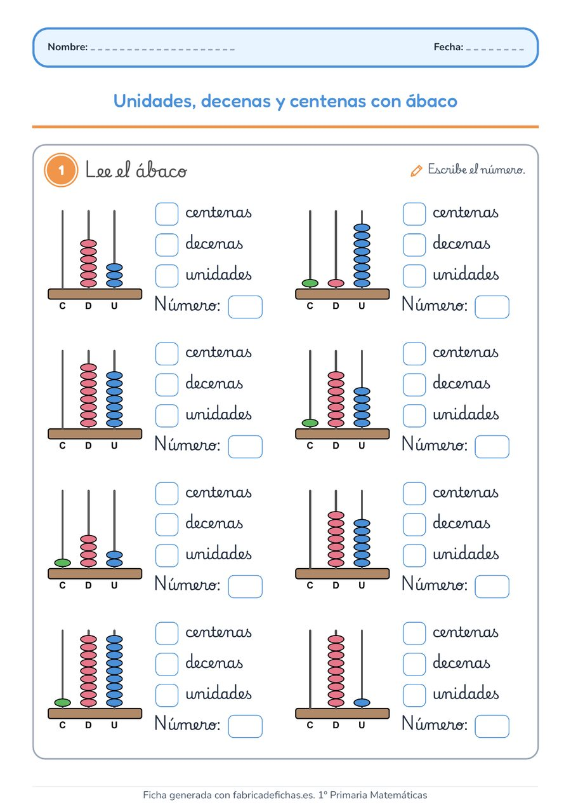

Gratis · Matemáticas · 2.º Primaria
Unidades, decenas y centenas con ábaco
Ficha de Matemáticas para 2.º de Primaria: el alumno lee cada ábaco de centenas, decenas y unidades, completa cuántas hay de cada y escribe el número.
Qué trabaja
- Lectura del ábaco
- Centenas, decenas y unidades
- Números de tres cifras
A4, lista para imprimir. Gratis para usar en clase o en casa.
Hecha con nuestro generador de fichasMuy pronto podrás crear fichas como esta, a medida para tus alumnos, en un par de minutos. Saber más
Más fichas de Matemáticas de 2.º Primaria
 Coloca y resta con llevadaRestas de dos cifras con llevada, en columna.
Coloca y resta con llevadaRestas de dos cifras con llevada, en columna. Unidades, decenas y centenas con regletasCuenta placas, barritas y cubitos y escribe el número.
Unidades, decenas y centenas con regletasCuenta placas, barritas y cubitos y escribe el número.Ver todas las fichas de Matemáticas de 2.º Primaria · Otros cursos